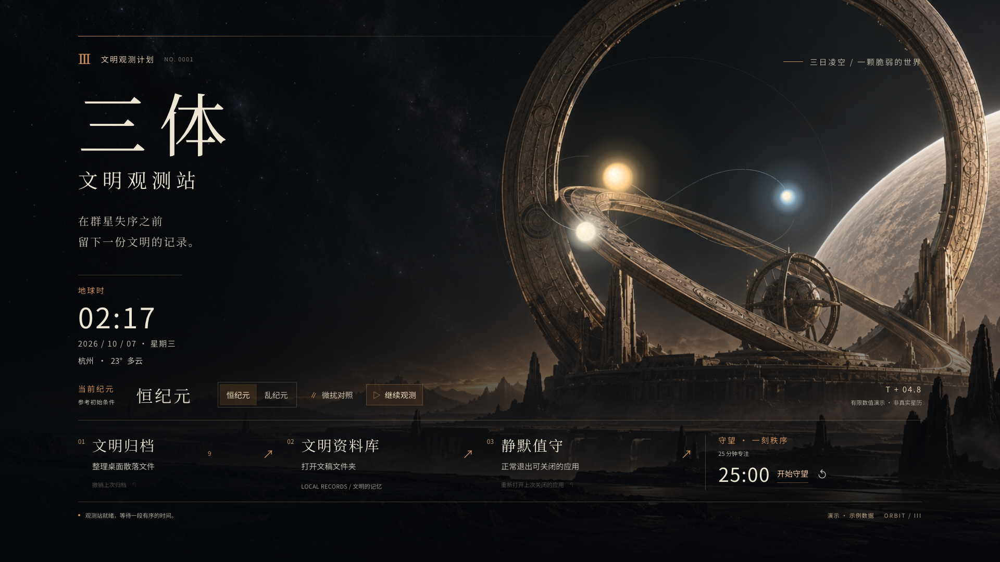
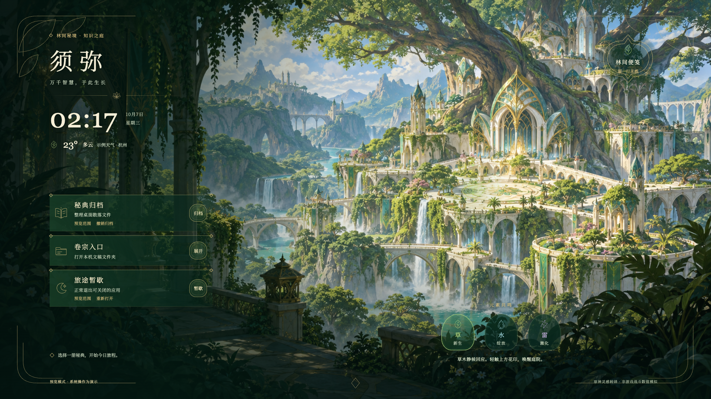

01 / UNPREDICTABILITY & ORDER
三体 · 文明观测站
Civilization Observatory在不可预测的世界，留下秩序。
让“观测与文明延续”成为桌面的行为逻辑。

Running theme / 实际运行截图进入观测站 ↗从恒纪元，到乱纪元
切换纪元，三日轨迹改变。指针化作观测探针，点击留下局部扰动。星空对你的介入作出回应。
为注意力留一段确定时间
用 25 分钟专注计时建立工作节奏。钟表、天气与工具在同一座观测台上各安其位。
日常，也有文明的尺度
归档文件、打开资料、结束工作，化为文明归档、文明资料库与静默值守。命名有意境，功能有说明。
02 / KNOWLEDGE & GROWTH
原神 · 须弥知识之庭
Sumeru · Garden of Knowledge让知识生长，让日常融入风景。
在树城、瀑布与元素之间，设计另一种生活节奏。

Running theme / 实际运行截图漫步知识之庭 ↗触碰庭院，让元素相遇
草木生长、水色绽放、雷光沿枝脉游走。不同选择带来不同回应，水光与流叶为静候时的庭院保留生机。
把灵感，留在林间
打开金色叶印，写下便笺。卷宗、时钟与天气采用不同形态，在繁复的风景中仍然清晰可用。
同样的工具，全新的形态
以植物纹样、书卷与金色边饰承载归档、资料入口和收工。布局随主题重新组织。
在线演示使用示例天气、文件与应用数据，系统按钮不操作你的电脑。计时可用；便笺仅保存在当前浏览器本地。建议在电脑浏览器体验。
From a brief to a living desktop
主题有内核，
每个细节有来处。
起点是一次桌面大扫除。后来，想让按钮融入风景，让河流流动，让星空回应鼠标。一次次迭代留下的设计与交付方法，被写成了这个 Skill。
下一套世界可以完全不同：静态、摄影、像素或实用工作台，都成立。
理解世界，也理解你的工作
明确主题的意义、必需功能、屏幕与性能偏好。
一起设计画面、动作和工具
用合适的构图、素材和反馈建立联系，保留清楚的操作路径。
亲眼看，亲手试，再交付
实际截图、交互与临时数据测试，分别验证浏览器和桌面宿主。
保留旧主题，继续生长
独立主题目录、可扩展功能与可回退的操作，支持下一次灵感。
Your next world
下一次，从你的想法开始。
“做一个深海研究站桌面。探索与记录是主题，要有待办、资料入口和专注计时，让声呐与鼠标互动。”